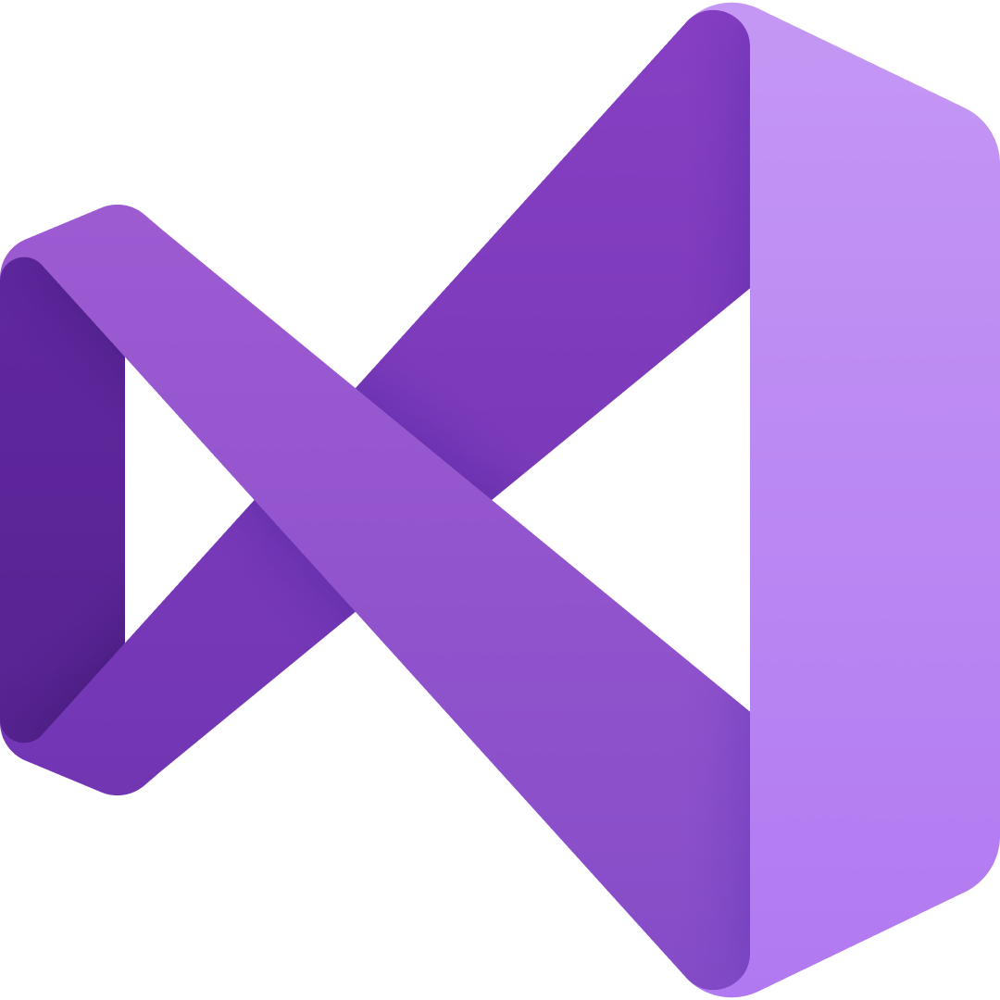
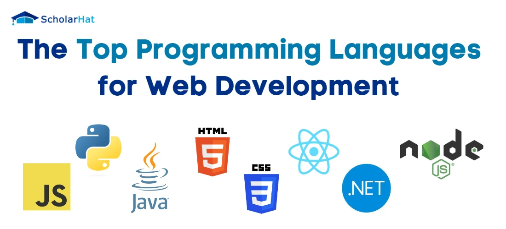

Adobe Photoshop
My journey started with adobe photoshop in 2019 when I was only 12 years old. I always enjoyed using my pc and playing, but the using photoshop was my first serious usage of computers. It all began when our school added a computer class to our schedule. We had a cool teacher that told us the basics of photoshop. He was so cool all of my classmates like his class, but I was realy impressed and loved it I used to make projects outside of the class and show it to him. One day he spoke to my parents and talked about my passion of computers. Ans so thanks to him my family were always helpful and supportful to me.
Adobe Premiere
My next technology to learn was adobe premier pro 2020. This was the first time I was learning something on my own(self taught). It was a fantastic time. I finished a full course and did a lot of projects so I was comfident of myself a lot. It was found pretty helpful to me.

Unity
In 2021 I started using and learning Unity. This period of my life is so special for me, I belive it was the longest technology I have ever used till(about 2 years) now and because it was the start of programming and coding for me !(not realy cause I have learned some c++, python and some other programming languages after premiere but unity and c# were my first true choice and I have used them alot longer than them.) because of my love for game and my ideas of making AAA games. I did A lot of that hope I could show some of my examples to you but backthen I didn't have a clue what a VCS is, and once I was playing aruond with my laptop to open it's bios and I screwed up and lost every one of my hole life projects.😭😅 For unity I used Visual Studio that is a slow ass heavy weight IDE!😂
So Why Did I Quit Unity?
It was a hard time for me leaving unity and I still love gamedev, but I had 2 problems with it:
- I didn't have the computing power.
- There isn't a lot of jobs in my country for gamedevs.
Python
In 2023 AI was so hot and I had quite Unity so I started learning python. I didn't learn from my mistakes and after quiting a bad choice and started to learn another one. One of my catch phrases is that "I did every possible mistake so I wont do another" but I still didn't check the market and the pre requirements and got into python for learning machine learning. It was a good experience but I could have focused on better siuted things for me. But it wasn't a complete failure cause it helped me with cs50 and even js cause their so alike. I made a lot of cool projects in python too. I even made a voice assistant like jarvis using google text to speech, google speech recognition and ChatGPT. I wish I could show it to you but I lost it too.😭
Why Did I Quit Python
I had 3 reasons for this even worse than unity.😂 The first two being the same, but the third was lack of math knowledg. Even to this day I don't have the knowledg(by this day I mean a year later🤣). Don't forget I'm still in highschool atleast when I'm writing this loooong project(it took longer than what I expected😅).
This Is CS50
What a coincidence I'm making this website for CS50! At the end of 2023 after realizing what a big mistake I have done I came to realize I should think about my next move. So I grinded the internet and found CS50. So I started learning it so far it was the best programming class I have ever taking although it was free!!😮 I made the first 8.5 weeks(including week 0) pretty fast(probably cause I had prior experience), I think I even broke a record(about 3 weeks I guess)! but when I arrived at the 8th week I stopped. I understood I should become a lot better at this part cause I want to specialize in this part. Ans this is the last assignment for that week.
Web Developement
From experimenting and gathering information about a lot of CS's subcategories I came to the conclusion to use my last resort Web Developement. Although I was running away from it at last I got to back to it.(I have done a little bit of it before)

Angular
This is where I am now and learning Angular for front end. For the backend I'll chose between NodeJS and Flask. NodeJs is good cause I like js an ts and Flask is good cause it is taught in CS50 and I will feel better knowing all that python learning wasn't for nothing!😁
Conclusion
This has been a lot of fun writing this page. It brought up a lot of memories. I hope you enjoyed it and If you did feel free to let me know!😉